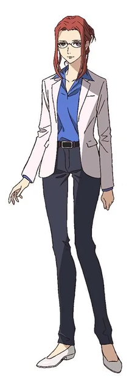

- Nome: Penelope Marks
- Idade: 27 anos - Primeira Temporada
47 anos - Segunda Temporada - Altura: 1,79m
- Ocupação: Jornalista - Primeira Temporada
Oráculo - Segunda Temporada - Relacionamentos: Angela Moore - Esposa
Allan - Filho adotivo
Abigail - Filha adotiva
Jornalista Idealista e Mãe nas Horas Vagas
Ela é uma mulher determinada, inteligente, de personalidade forte, tendo tudo para ser muito bem-sucedida na sua carreira.
No entanto, a promessa que fez para o dono do jornal principal da cidade, que iria assumir o local a prendia ali.
Naquela fase da vida, ter que evitar que o jornal entrasse em falência, de todos que trabalhavam ali(incluindo o Allan, filho do dono), ela era única com real capacidade para o trabalho que basicamente não existia, estavam acabando com a mente dela.
Todo esse caos na sua vida parecia não acabar, durante a fase do RPG, um amor do passado voltou e com sua presença ali, estourou todo o inferno que aconteceu na primeira temporada e que fariam a vida dela tomar um rumo bem inesperado.
Curiosidades:
-
Quando ela era criança, sofria bullying por ser gordinha e ter espinhas.
-
Seu primeiro encontro com sua futura esposa não foi ideal, ela foi enviada da cidade grande por problemas confidenciais.
Ela esperava uma amiga e a Angela difícil como era, foi grossa com ela.
Conforme o caos aconteceu, ela se apegou a última coisa que tinha sobrado, a Angela, e ela, queria se redimir sendo amiga dela.
Isso acabou gerando em uma confusão e pela ironia do destino, com ambas gostando uma da outra.
-
Se tornou esposa da minha personagem Angela Moore por puro acaso, conforme tive química com a personagem e que o mestre viu o potêncial delas no futuro, mesmo que tenha sido um caminho bem... problemático.
Além disso, no final da segunda, prentendia se aposentar para finalmente ser mãe, adotando um menino.
- Seu design foi retirado do anime Great Pretender da personagem Cynthia Moore.